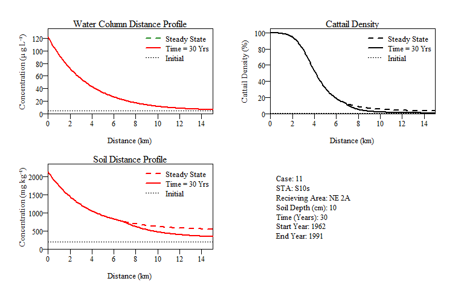

Contact Info: Webpage - Twitter - Email
Table of Contents
Task List
-
Distance profile function,
EPGMProfile()with plots. -
Add summary reults table to distance profile function,
EPGMProfile(). -
Develop time-series function,
EPGMTime().- Develope time-series results summary function.
- Develop threshold evaluation function.
-
Figure out how to code greek (i.e. mu) and superscript for
.Rdfiles. -
rOpenSci presubmission inquiry. Link -
Submit to rOpenSci for community peer-review. - Submit to CRAN.
Background
This package is an R-version of the original Everglades Phosphorus Gradient Model developed by Walker and Kadlec and implements the model described in:
- Walker WW, Kadlec, R.H. (1996) A Model for Simulating Phosphorus Concentrations in Waters and Soils Downstream of Everglades Stormwater Treatment Areas. U.S. Department of the Interior. Links to: Report; Appendix.
The model is further discussed in:
Kadlec RH, Walker WW (1999) Management models to evaluate phosphorus impacts on wetlands. In: Reddy KR, O’Conner GA, Schelske CL (eds) Phosphorus Biogeochemistry in Subtropical Ecosystems. Lewis Publishers, Boca Raton, FL, pp 621–639.
Walker WW, Kadlec RH (2011) Modeling Phosphorus Dynamics in Everglades Wetlands and Stormwater Treatment Areas. Critical Reviews in Environmental Science and Technology 41:430–446.
Introduction
Everglades Phosphorus Gradient Model (EPGM; Fig. 1) predicts variations in water-column phosphorus (P) concentration, peat accretion rate, and soil P concentration along a horizontal gradient imposed by an external P load and sheet-flow conditions. Cattail densities and total areas are predicted based upon correlations with soil P and are surrogates for impacts on ecosystem components which respond to soil P variations in similar concentration ranges. The model is calibrated to soil and vegetation data from Water Conservation Area - 2 (WCA-2; primarily), WCA-1, and WCA-3A. The model successfully simulates observed longitudinal gradients in soil P concentration below the S10 structures in WCA-2A after ~28 years of external P loading (1962 to 1990). Observed expansion of cattail populations in this region between 1973 and 1991 is also simulated, though somewhat over-predicted during the first 20 years. Model results suggest a linear relationship between marsh water-column and soil P concentrations over long time scales. Estimated soil response times range from 20 to 40 years, depending on soil depth, and are inversely related to water-column concentration.

Figure 1: Generalized model structure of the Everglades Phosphorus Gradient Model as originally developed by Walker and Kadlec. The model embodies water and phosphorus mass conservation specific to wetland ecosystems designed for phosphorus management.
Citing package
A lot of time and effort went into the development of the original EPGM and it is important to give the authors proper credit. This is the ultimate foundation of this R package.
- Walker WW, Kadlec, R.H. (1996) A Model for Simulating Phosphorus Concentrations in Waters and Soils Downstream of Everglades Stormwater Treatment Areas. U.S. Department of the Interior
It also took time in developement of the EPGMr, translating the spreadsheet model into the R environment. To see a current citation for EPGMr, use the following command in R:
citation('EPGMr')
##
## To cite package 'EPGMr' in publications use:
##
## Paul Julian (2020). EPGMr: Implementation of the
## Everglades Phosphorus Gradient Model in R. R
## package version 1.0.0.
## https://github.com/swampthingpaul/EPGMr
##
## A BibTeX entry for LaTeX users is
##
## @Manual{,
## title = {EPGMr: Implementation of the Everglades Phosphorus Gradient Model in R},
## author = {Paul Julian},
## year = {2020},
## note = {R package version 1.0.0},
## url = {https://github.com/swampthingpaul/EPGMr},
## }Installation
install.packages("devtools");# if you do not have it installed on your PC devtools::install_github("SwampThingPaul/EPGMr")
Functions
For the examples below we are going to use an internal dataset within this package. This is also the data provided in the orginal EPGM as case study examples. To see these data use the data() function. This internal package data is a table of variables from data provided in the original EPGM model. This data (and the original) has 12 examples (cases) of phosphorus inputs, hydrologic information (inflow volume, rainfall, evapotranspiration and hydroperiod), soil depth of interest, soil characteristics, and soil gradient values. Examples include dicharges from Stormwater Treatment Area (STA) 2, 3/4, 5, 6 and the S10 structures.
data("casedat")
Case number 11 is data from the S10 structures that discharge into northeast Water Conservation area 2A, the historic eutrophication gradient within the Everglades ecosystem.
#I transposed the data for easy viewing. t(casedat[casedat$case.number==11,])
## 11
## case.number "11"
## STA.Name "S10s"
## Receiving.Area "NE 2A"
## Start.Discharge "1962"
## STA.outflow.TPconc "122"
## STA.outflow.vol "281.3"
## FlowPath.width "10.5"
## Hydroperiod "91.4"
## Soil.Depth "10"
## Soil.BulkDensity.initial "0.102"
## Soil.TPConc.initial "198"
## Vertical.SoilTPGradient.initial "-0.0018"
## Soil.BulkDensity.final "0.08"
## PSettlingRate "10.2"
## P.AtmoDep "42.9"
## Rainfall "1.16"
## ET "1.38"EPGMr is broken into three functions.
EPGMProfilesimulates the phopshorus gradient (distance downstream) during a specified simulation period (default: 30 years). The function as defaulted also provides a summary results output and plot of water column total P, soil P and cattail density along the gradient. Graphical output includes steady state simulation and time at the simulation period (default: 30 years).EPGMTimeusesEPGMProfileto simulate yearly P dynamics along the gradient for a specified period (default: 200 years) thereby simulating changes in P along the gradient over time. Similar toEPGMProfileas defaulted a summary table is provided based on distance intervals specified in theDist.sliceargument in the function (default isc(0,0.5,1,2,5,10)). Also as a default a series of time plots are generated for soil P and cattail density.EPGMThresholdevaluates raw outputs fromEPGMTimerelative to thresholds for water column, soil and cattail density. As a default it provides a summary table and plot.
This will run the example case number 11, plot the distance profile depicited below and provide a summary results table. If raw.output was set to TRUE, the raw data behind the plots and summary tables would be printed in the console. If results.table was set to TRUE then a summary results table will be printed (default). The results output table under $DistanceProfile provides a summary of the simulation period at several user input distances, however the default argument in the function is summary.distance=c(0,0.5,1,2,4,8,10). Other information in the summary result tab include, simulation inputs, water budget, phosphorus mass balance and information on regarding soils for the simulation period (default is 30 years).
EPGMProfile(case.no=11,plot.profile=TRUE,summary.distance=c(0,1,2,4,10))

## $Time.yrs
## [1] 30
##
## $Simulated.Zone
## Parameter Value
## 1 Distance.km 15.0
## 2 Width.km 10.5
## 3 Area.km2 157.5
## 4 STA.outflow.volume.kAcftyr 281.3
## 5 Hydroperiod.pct 91.4
## 6 Soil.Depth.cm 10.0
## 7 P.Settle.Rate.myr 10.2
## 8 STA.outflow.Conc.ugL 122.0
## 9 STA.outflow.Load.mtyr 42.4
##
## $DistanceProfile
## 0 1 2
## WaterCol.Pconc.ugL 122.00 93.70 72.10
## SteadyState.WC.Conc.ugL 122.00 93.70 72.10
## SteadyState.Soil.Conc.mgkg 2131.00 1744.00 1449.00
## Time.to.Steady.State.yrs 15.00 16.00 17.20
## NewSoil.Depth.cm 10.00 10.00 10.00
## Soil.Mass.Accret.kgm2yr 0.67 0.63 0.58
## Cattail.Density.pct 100.00 99.00 95.00
## SteadyState.Cattail.Density.pct 100.00 99.00 95.00
## 4 10
## WaterCol.Pconc.ugL 43.10 11.50
## SteadyState.WC.Conc.ugL 43.10 11.50
## SteadyState.Soil.Conc.mgkg 1053.00 620.00
## Time.to.Steady.State.yrs 20.90 46.30
## NewSoil.Depth.cm 10.00 6.50
## Soil.Mass.Accret.kgm2yr 0.48 0.22
## Cattail.Density.pct 53.00 2.00
## SteadyState.Cattail.Density.pct 53.00 5.00
##
## $Water.Budget
## Total.Flow.m Total.Flow.hm3 Sim.Avg.Flow.myr
## Inflow 66.14 10417 2.20
## Rainfall 34.80 5481 1.16
## ET 41.40 6520 1.38
## Outflow 59.54 9378 1.98
##
## $P.MassBalance
## PMass.mgm2 PMass.mtons Sim.Avg.Load.mgm2yr
## Inflow 8069 1270.9 269.0
## Rainfall 1493 235.1 49.8
## Removal 8986 1415.3 299.5
## Outflow 576 90.7 19.2
##
## $Soils
## SoilMass.kgm2 PMass.mgm2 PConc.mgkg
## Initial Storage 10.20 2020 198
## Current Storage 8.46 6761 800
## Accretion 8.22 8986 1093
## Burial 9.97 4245 426
## BulkDensity.gcm3 PVol.mgcm3
## Initial Storage 0.102 0.020
## Current Storage 0.085 0.068
## Accretion 0.080 0.087
## Burial 0.097 0.041This function will run the EPGM model over a determined period of time (with specificied time increment). If raw.time.output is set to TRUE, the raw data behind the plots and summary tables will be printed in the console and/or saved as an object. This will results in a data.frame with data specific to space (i.e. distance) and time (i.e. year).
EPGMTime(case.no=11)

## $Time.yrs
## [1] 200
##
## $Time.increment.yrs
## [1] 5
##
## $Simulated.Zone
## Parameter Value
## 1 Distance.km 15.0
## 2 Width.km 10.5
## 3 Area.km2 157.5
## 4 STA.outflow.volume.kAcftyr 281.3
## 5 Hydroperiod.pct 9140.0
## 6 Soil.Depth.cm 10.0
## 7 P.Settle.Rate.myr 10.2
## 8 STA.outflow.Conc.ugL 122.0
## 9 STA.outflow.Load.mtyr 42.4
##
## $TimeProfile
## Time.Step Year SoilP.mgkg CattailDensity.ha
## 1 0 1961 198 47
## 2 5 1966 335 226
## 3 10 1971 476 1603
## 4 15 1976 622 3201
## 5 20 1981 715 4238
## 6 25 1986 765 4615
## 7 30 1991 800 4755
## 8 35 1996 826 4830
## 9 200 2161 902 5005This function will calculate, summarise and plot area exceedance for results from EPGMTime(). Currently the function is configured to evaluate three threshold for water column, soil and cattail density within the modelled flow-path. Much like the other functions, If raw.area.output is set to TRUE, then the raw results summarized in the summary table and plots will be provided as a data.frame.
example
## $TotalArea.km2
## [1] 157.5
##
## $Thresholds
## Thresholds Value1 Value2 Value3
## 1 Water Column (ug/L) 10 15 20
## 2 Soil (mg/kg) 500 600 1000
## 3 Cattail Density (%) 5 20 90
##
## $WaterColumn
## Time.Step Year WC.10 WC.15 WC.20
## 1 0 1961 0.000 0.000 0.000
## 2 5 1966 113.925 89.775 76.125
## 3 10 1971 113.925 89.775 76.125
## 4 15 1976 113.925 89.775 76.125
## 5 20 1981 113.925 89.775 76.125
## 6 25 1986 113.925 89.775 76.125
## 7 30 1991 113.925 89.775 76.125
## 8 35 1996 113.925 89.775 76.125
## 41 200 2161 113.925 89.775 76.125
##
## $Soil
## Time.Step Year Soil.500 Soil.600 Soil.1000
## 1 0 1961 0.000 0.000 0.000
## 2 5 1966 23.625 13.125 0.000
## 3 10 1971 50.925 40.425 15.225
## 4 15 1976 67.725 56.175 30.975
## 5 20 1981 80.325 67.725 42.525
## 6 25 1986 90.825 78.225 45.675
## 7 30 1991 99.225 85.575 45.675
## 8 35 1996 107.625 92.925 45.675
## 41 200 2161 157.500 113.925 45.675
##
## $Cattail
## Time.Step Year Cattail.5 Cattail.20 Cattail.90
## 1 0 1961 0.000 0.000 0.000
## 2 5 1966 12.075 0.000 0.000
## 3 10 1971 39.375 23.625 1.575
## 4 15 1976 55.125 39.375 18.375
## 5 20 1981 66.675 50.925 25.725
## 6 25 1986 77.175 59.325 25.725
## 7 30 1991 84.525 61.425 25.725
## 8 35 1996 91.875 61.425 25.725
## 41 200 2161 108.675 61.425 25.725Below is an example of the EPGMProfile function with user input data rather than case specific data.
#User defined inputs Discharge.Yr

## $Time.yrs
## [1] 30
##
## $Simulated.Zone
## Parameter Value
## 1 Distance.km 15.0
## 2 Width.km 10.5
## 3 Area.km2 157.5
## 4 STA.outflow.volume.kAcftyr 281.3
## 5 Hydroperiod.pct 91.4
## 6 Soil.Depth.cm 10.0
## 7 P.Settle.Rate.myr 10.2
## 8 STA.outflow.Conc.ugL 122.0
## 9 STA.outflow.Load.mtyr 42.4
##
## $DistanceProfile
## 0 1 5
## WaterCol.Pconc.ugL 122.00 93.50 33.50
## SteadyState.WC.Conc.ugL 122.00 93.50 33.50
## SteadyState.Soil.Conc.mgkg 2131.00 1742.00 921.00
## Time.to.Steady.State.yrs 15.00 16.00 23.60
## NewSoil.Depth.cm 10.00 10.00 10.00
## Soil.Mass.Accret.kgm2yr 0.67 0.63 0.42
## Cattail.Density.pct 100.00 99.00 31.00
## SteadyState.Cattail.Density.pct 100.00 99.00 31.00
## 10
## WaterCol.Pconc.ugL 11.50
## SteadyState.WC.Conc.ugL 11.50
## SteadyState.Soil.Conc.mgkg 621.00
## Time.to.Steady.State.yrs 46.20
## NewSoil.Depth.cm 6.50
## Soil.Mass.Accret.kgm2yr 0.22
## Cattail.Density.pct 2.00
## SteadyState.Cattail.Density.pct 5.00
##
## $Water.Budget
## Total.Flow.m Total.Flow.hm3 Sim.Avg.Flow.myr
## Inflow 66.14 10417 2.20
## Rainfall 36.90 5812 1.23
## ET 41.40 6520 1.38
## Outflow 61.64 9708 2.05
##
## $P.MassBalance
## PMass.mgm2 PMass.mtons Sim.Avg.Load.mgm2yr
## Inflow 8069 1270.9 269.0
## Rainfall 1583 249.3 52.8
## Removal 8971 1413.0 299.0
## Outflow 681 107.2 22.7
##
## $Soils
## SoilMass.kgm2 PMass.mgm2 PConc.mgkg
## Initial Storage 10.20 2020 198
## Current Storage 8.45 6756 799
## Accretion 8.22 8971 1091
## Burial 9.97 4235 425
## BulkDensity.gcm3 PVol.mgcm3
## Initial Storage 0.102 0.020
## Current Storage 0.085 0.068
## Accretion 0.080 0.087
## Burial 0.097 0.041Potential errors
- If internal data is being used to run the model and the user selects a case number not in the list.
EPGMProfile(case.no=14)
- If
raw.output=TRUEandresults.table=TRUEat its current stands the function will default to the results table and plot with a warning.
EPGMProfile( case.no=11, summary.distance=c(0,1,5,10), raw.output=TRUE, results.table=TRUE)
## Warning in EPGMProfile(case.no = 11, summary.distance = c(0,
## 1, 5, 10), : Can't have raw.output and results.table, You
## can't have your cake and eat it too.
## $Time.yrs
## [1] 30
##
## $Simulated.Zone
## Parameter Value
## 1 Distance.km 15.0
## 2 Width.km 10.5
## 3 Area.km2 157.5
## 4 STA.outflow.volume.kAcftyr 281.3
## 5 Hydroperiod.pct 91.4
## 6 Soil.Depth.cm 10.0
## 7 P.Settle.Rate.myr 10.2
## 8 STA.outflow.Conc.ugL 122.0
## 9 STA.outflow.Load.mtyr 42.4
##
## $DistanceProfile
## 0 1 5
## WaterCol.Pconc.ugL 122.00 93.70 33.60
## SteadyState.WC.Conc.ugL 122.00 93.70 33.60
## SteadyState.Soil.Conc.mgkg 2131.00 1744.00 923.00
## Time.to.Steady.State.yrs 15.00 16.00 23.50
## NewSoil.Depth.cm 10.00 10.00 10.00
## Soil.Mass.Accret.kgm2yr 0.67 0.63 0.42
## Cattail.Density.pct 100.00 99.00 32.00
## SteadyState.Cattail.Density.pct 100.00 99.00 32.00
## 10
## WaterCol.Pconc.ugL 11.50
## SteadyState.WC.Conc.ugL 11.50
## SteadyState.Soil.Conc.mgkg 620.00
## Time.to.Steady.State.yrs 46.30
## NewSoil.Depth.cm 6.50
## Soil.Mass.Accret.kgm2yr 0.22
## Cattail.Density.pct 2.00
## SteadyState.Cattail.Density.pct 5.00
##
## $Water.Budget
## Total.Flow.m Total.Flow.hm3 Sim.Avg.Flow.myr
## Inflow 66.14 10417 2.20
## Rainfall 34.80 5481 1.16
## ET 41.40 6520 1.38
## Outflow 59.54 9378 1.98
##
## $P.MassBalance
## PMass.mgm2 PMass.mtons Sim.Avg.Load.mgm2yr
## Inflow 8069 1270.9 269.0
## Rainfall 1493 235.1 49.8
## Removal 8986 1415.3 299.5
## Outflow 576 90.7 19.2
##
## $Soils
## SoilMass.kgm2 PMass.mgm2 PConc.mgkg
## Initial Storage 10.20 2020 198
## Current Storage 8.46 6761 800
## Accretion 8.22 8986 1093
## Burial 9.97 4245 426
## BulkDensity.gcm3 PVol.mgcm3
## Initial Storage 0.102 0.020
## Current Storage 0.085 0.068
## Accretion 0.080 0.087
## Burial 0.097 0.041- If the
Dist.increment.kmis greater than theMax.Distarguments, the function will stop and provide a warning.
EPGMProfile( case.no=11, Dist.increment.km=16, Max.Dist=15)
-
summary.distancevalues must be positve, so can’t back look behind the discharge with this model.
EPGMProfile( case.no=11, summary.distance=-1)